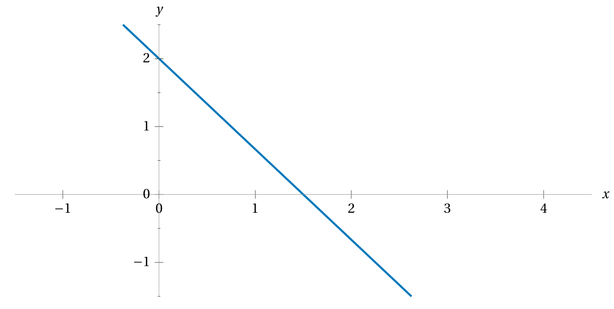

What’s the slope of this line
given by the equation \(y = 7+3x?\)
What’s an equation of the line
passing through the points
\((-1,2)\) and \((9,-1)?\)
What’s an equation for the line
graphed in this plot?

An entomologist suspects that
the rate at which crickets chirp
depends on the temperature in the crickets’ environment.
Over the course of a few days in the field,
she collects data, counting cricket chirps,
and based on that data devises a function
to model the number of cricket chirps-per-minute \(c(t)\)
given the environmental temperature \(t\) (°F) as
\[ c(t) = \frac{12t-52}{7}\,. \]
How can you tell this function is linear,
simply by referring to the form of the formula?
What is the rate of change
in chirps-per-minute per change in temperature?
I.e. how many more chirps-per-minute will there be
for every increase in temperature by 1°F?
What does this rate of change mean
within the context of the situation?
What is the \(y\)-intercept of the graph of \(y = c(t)?\)
What does this value mean within the context
of the situation being modelled?
This is the most important question of this activity;
Come up with a well-thought-out response to it.
Based on your analysis of the function \(c\)
as a model for how often a cricket chirps
given the temperature of the cricket’s environment,
do you think it’s a “good” model? Why or why not?